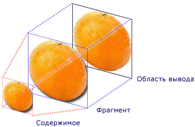
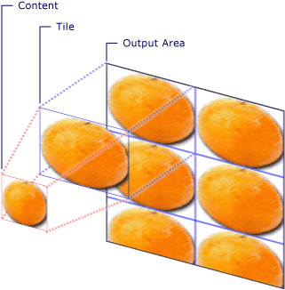
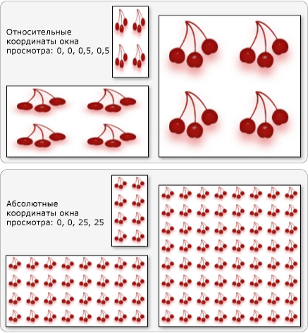
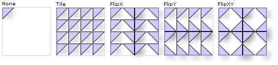

Общие сведения о TileBrush
TileBrush объекты обеспечивают высокую степень контроля над закрашивание области с изображением, Drawing, или Visual. В этом разделе описывается использование TileBrush функции позволяют получить больший контроль над тем, как ImageBrush, DrawingBrush, или VisualBrush закрашивает область.
Предварительные требования
Для понимания этого раздела, полезно понять, как использовать основные функции этого ImageBrush, DrawingBrush, или VisualBrush класса. Введение в этих типов, см. в разделе Рисование с помощью изображений, рисунков и визуальных элементов.
Заполнение области с помощью мозаики
ImageBrush, DrawingBrush, являются VisualBrush типов TileBrush объектов. Мозаичная кисть позволяет тщательно контролировать заполнение области для изображений, рисунков и визуальных элементов. Например, можно заполнить область не одним растянутым изображением, а элементами мозаики, которые образуют узор.
Заполнение области с помощью мозаичной кисти включает три компонента: содержимое, базовый элемент мозаики и область вывода.

Компоненты TileBrush с одним элементом мозаики

Компоненты TileBrush с TileMode, имеющим значение Tile
Область вывода представляет области, такие как Fill из Ellipse или Background из Button. В следующих разделах описываются два остальных компонента TileBrush.
Содержимое кисти
Существует три разных типа TileBrush и каждый закрашивает различным типом содержимого.
Если используется кисть ImageBrush, это содержимое является изображением ImageSource свойство определяет содержимое ImageBrush.
Если используется кисть DrawingBrush, это содержимое является рисунка. Drawing Свойство определяет содержимое DrawingBrush.
Если используется кисть VisualBrush, это содержимое является визуальный элемент. Visual Свойство определяет содержание VisualBrush.
Можно указать положение и размеры TileBrush содержимого с помощью Viewbox свойство, несмотря на то, что довольно часто, чтобы оставить Viewbox присвоено значение по умолчанию. По умолчанию Viewbox полностью содержит содержимое кисти. Дополнительные сведения о настройке Viewbox, см. в разделе Viewbox страницу свойств.
Базовый элемент мозаики
Объект TileBrush проецирует свое содержимое на базовый элемент мозаики. Stretch Свойства элементов управления как TileBrush содержимое растягивается для заполнения базового элемента мозаики. Stretch Свойство принимает следующие значения, определенные Stretch перечисления:
None: Содержимое кисти не растягивается для заполнения плитки.
Fill: Содержимое кисти масштабируется по размерам плитки. Поскольку высота и ширина содержимого масштабируются независимо друг от друга, исходные пропорции содержимого могут не сохраняться. То есть содержимое кисти может быть деформировано для полного заполнения выводимого элемента.
Uniform: Содержимое кисти масштабируется таким образом, чтобы полностью уместиться внутри фрагмента. Пропорции содержимого сохраняются.
UniformToFill: Содержимое кисти масштабируется таким образом, чтобы полностью заполнить область вывода при этом сохранить исходные пропорции содержимого.
На следующем рисунке показан другой Stretch параметры.

В следующем примере содержимое ImageBrush таким образом, она не растягивается для заполнения области вывода.
<Rectangle
Width="125" Height="175"
Stroke="Black"
StrokeThickness="1"
Margin="0,0,5,0">
<Rectangle.Fill>
<ImageBrush
Stretch="None"
ImageSource="sampleImages\testImage.gif"/>
</Rectangle.Fill>
</Rectangle>
// Create a rectangle.
Rectangle myRectangle = new Rectangle();
myRectangle.Width = 125;
myRectangle.Height = 175;
myRectangle.Stroke = Brushes.Black;
myRectangle.StrokeThickness = 1;
myRectangle.Margin = new Thickness(0,5,0,0);
// Load the image.
BitmapImage theImage =
new BitmapImage(
new Uri("sampleImages\\testImage.gif", UriKind.Relative));
ImageBrush myImageBrush = new ImageBrush(theImage);
// Configure the brush so that it
// doesn't stretch its image to fill
// the rectangle.
myImageBrush.Stretch = Stretch.None;
// Use the ImageBrush to paint the rectangle's background.
myRectangle.Fill = myImageBrush;
По умолчанию TileBrush создает один элемент (базовый элемент мозаики) и растягивает этот элемент, чтобы полностью заполнить область вывода. Размер и положение базового элемента мозаики можно изменить, задав Viewport и ViewportUnits свойства.
Размер базового элемента мозаики
Viewport Свойство определяет размер и положение базовый элемент мозаики и ViewportUnits определяет свойство ли Viewport задается с помощью абсолютных или относительных координат. Относительные координаты задаются относительно размера области вывода. Точка (0, 0) представляет левый верхний угол области вывода, а точка (1, 1) — правый нижний угол области вывода. Чтобы указать, что Viewport свойство использует абсолютные координаты, задайте ViewportUnits свойства Absolute.
На следующем рисунке показано различие в выходных данных между TileBrush с абсолютных и относительных ViewportUnits. Обратите внимание, что на каждом рисунке показан шаблон мозаики. В следующем разделе описано, как задать шаблон заполнения.

В следующем примере с помощью изображения создается элемент с шириной и высотой 50 %. Базовый элемент мозаики расположен в точке (0, 0) области вывода.
<Rectangle
Width="50" Height="100">
<Rectangle.Fill>
<!-- Paints an area with 4 tiles. -->
<ImageBrush ImageSource="sampleImages\cherries_larger.jpg"
Viewport="0,0,0.5,0.5"
ViewportUnits="RelativeToBoundingBox"
TileMode="Tile" />
</Rectangle.Fill>
</Rectangle>
// Create a rectangle.
Rectangle myRectangle = new Rectangle();
myRectangle.Width = 50;
myRectangle.Height = 100;
// Load the image.
BitmapImage theImage =
new BitmapImage(
new Uri("sampleImages\\cherries_larger.jpg", UriKind.Relative));
ImageBrush myImageBrush = new ImageBrush(theImage);
// Create tiles that are 1/4 the size of
// the output area.
myImageBrush.Viewport = new Rect(0,0,0.25,0.25);
myImageBrush.ViewportUnits = BrushMappingMode.RelativeToBoundingBox;
// Set the tile mode to Tile.
myImageBrush.TileMode = TileMode.Tile;
// Use the ImageBrush to paint the rectangle's background.
myRectangle.Fill = myImageBrush;
В следующем примере задаются плитках ImageBrush на 25 на 25 аппаратно-независимых пикселях. Так как ViewportUnits абсолютны, ImageBrush всегда будут иметь 25 на 25 пикселей, независимо от размера закрашиваемой области.
<Rectangle
Width="50" Height="100">
<Rectangle.Fill>
<!-- Paints an area with 25 x 25 tiles. -->
<ImageBrush ImageSource="sampleImages\cherries_larger.jpg"
Viewport="0,0,25,25"
ViewportUnits="Absolute"
TileMode="Tile" />
</Rectangle.Fill>
</Rectangle>
// Create a rectangle.
Rectangle myRectangle = new Rectangle();
myRectangle.Width = 50;
myRectangle.Height = 100;
// Load the image.
BitmapImage theImage =
new BitmapImage(
new Uri("sampleImages\\cherries_larger.jpg", UriKind.Relative));
ImageBrush myImageBrush = new ImageBrush(theImage);
// Create tiles that are 25 x 25, regardless of the size
// of the output area.
myImageBrush.Viewport = new Rect(0, 0, 25, 25);
myImageBrush.ViewportUnits = BrushMappingMode.Absolute;
// Set the tile mode to Tile.
myImageBrush.TileMode = TileMode.Tile;
// Use the ImageBrush to paint the rectangle's background.
myRectangle.Fill = myImageBrush;
Поведение элементов при заполнении
Объект TileBrush создает шаблон заполнения, когда его базового фрагмента мозаики не полностью заполняет область вывода и режим заполнения затем None указан. Когда мозаичной кисти не полностью заполняет область вывода, его TileMode свойство указывает, должен ли базовый мозаичный элемент дублироваться для заполнения области вывода, и если да, то как. TileMode Свойство принимает следующие значения, определенные TileMode перечисления:
None: Только базовый мозаичный элемент рисуется.
Tile: Базовый мозаичный элемент рисуется, и оставшаяся область заполняется повторами базового элемента мозаики таким образом, правого края одну плитку Примыкает к левой границей следующей и аналогично для верхней и нижней границ.
FlipX: Так же, как Tile, но Чередующиеся столбцы элементов отражаются по горизонтали.
FlipY: Так же, как Tile, но чередующиеся строки элементов отражаются по вертикали.
На следующем рисунке показаны различные режимы заполнения.

В следующем примере изображение используется для заполнения прямоугольника размерами 100 на 100 пикселей. Установив кисти Viewport было задано 0,0,0.25,0.25, базовый элемент кисти будет выполнен 1/4 от области вывода. Кисть, которая TileMode присваивается FlipXY. Таким образом прямоугольник заполняется строками из элементов мозаики.
<Rectangle
Width="100" Height="100" >
<Rectangle.Fill>
<ImageBrush ImageSource="sampleImages\triangle.jpg"
Viewport="0,0,0.25,0.25"
TileMode="FlipXY"
/>
</Rectangle.Fill>
</Rectangle>
// Create a rectangle.
Rectangle myRectangle = new Rectangle();
myRectangle.Width = 100;
myRectangle.Height = 100;
// Load the image.
BitmapImage theImage =
new BitmapImage(
new Uri("sampleImages\\triangle.jpg", UriKind.Relative));
ImageBrush myImageBrush = new ImageBrush(theImage);
// Create tiles that are 1/4 the size of
// the output area.
myImageBrush.Viewport = new Rect(0,0,0.25,0.25);
// Set the tile mode to FlipXY.
myImageBrush.TileMode = TileMode.FlipXY;
// Use the ImageBrush to paint the rectangle's background.
myRectangle.Fill = myImageBrush;